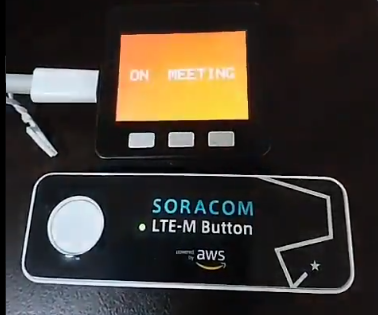

レシピ難易度: ★★★☆☆
テレワークをしていると家族の方から「今、声かけても大丈夫なのかな？」と心配されることが多々あります。
そこで、ネット環境が無くても AWS Lambda が実行可能な LTE-M 搭載ボタン型IoTデバイス「SORACOM LTE-M Button powered by AWS」と、液晶モニター付きプロトタイピング向けマイコンキット 「M5Stack」にモバイルデータ通信機能を加える "3G 拡張モジュール" を組み合わせて、今何してる？を表示する「オンエアー看板」の作り方をご紹介します。

ボタンデバイス、M5Stack 共にモバイル通信を利用しているため、ネット環境が無くても利用できます。表示の内容を変更したら、色々な応用例が考えられるのでは無いでしょうか？
本レシピを行うためには以下のものをご用意ください。
品名 | 数量 | 価格 | 購入先 | 備考 |
M5Stack Basic 3G 拡張ボード セット※1 | 1 | 12,800円 | M5Stack と M5Stack 用 3G 拡張ボードをそれぞれ準備いただいてもレシピを進めることができます。 M5Stack 用 3G 拡張ボードが対応している M5Stack は Basic と Gray の2モデルです。M5Stack FIRE は非対応ですのでご注意ください。 | |
SORACOM 特定地域向け IoT SIM (plan-D / データ通信のみ / nanoSIM サイズ) | 1 | 852円 | サイズは nano をお求めください。「マルチカット」には nano サイズが含まれています。 | |
SORACOM LTE-M Button powered by AWS | 1 | 7,980円 | 類似している SORACOM LTE-M Button for Enterprise や 同 Plus を用いる場合は AWS 側の設定が異なるため、ここで紹介しているレシピが適用できません。 | |
対辺1.5mm 六角レンチ(ドライバー) | 1 | 約410円 | M5Stack 用 3G 拡張ボードへ SIM を挿す際にボードの取り付け・取り外しに使用します。 | |
開発用パソコン | 1 | ― | ― | Arduino IDE と M5Stack 開発環境が整っていること (セットアップ方法は 【SORACOM ハンズオン】M5Stack 開発環境セットアップ (Windows / macOS 共通) (全体で約90分) をご覧ください) |
(必要な方のみ) USB 変換アダプタ | 1 | ― | ― | パソコンに USB Type-A ポートがない場合に準備してください。 1A 以上の電力が供給できるものを利用してください。(USB 3.0以上に対応していれば概ね安心です) |
(必要な方のみ) USB Type-C ↔ Type-C ケーブル | 1 | ― | ― | パソコンに USB Type-A ポートが用意できず、また、USB 変換アダプタも用意できない場合に準備してください。 |
※ 金額はレシピ作成時となります。ソラコムで販売している金額は税抜き・送料別です。それ以外のものは参考価格です。
必要なもの | 費用 | 作成方法など |
SORACOM アカウント | 無料※ | |
AWS アカウント | 無料※ |
※ アカウント作成・維持の費用の料金です。
実際のレシピは以下をご覧ください。